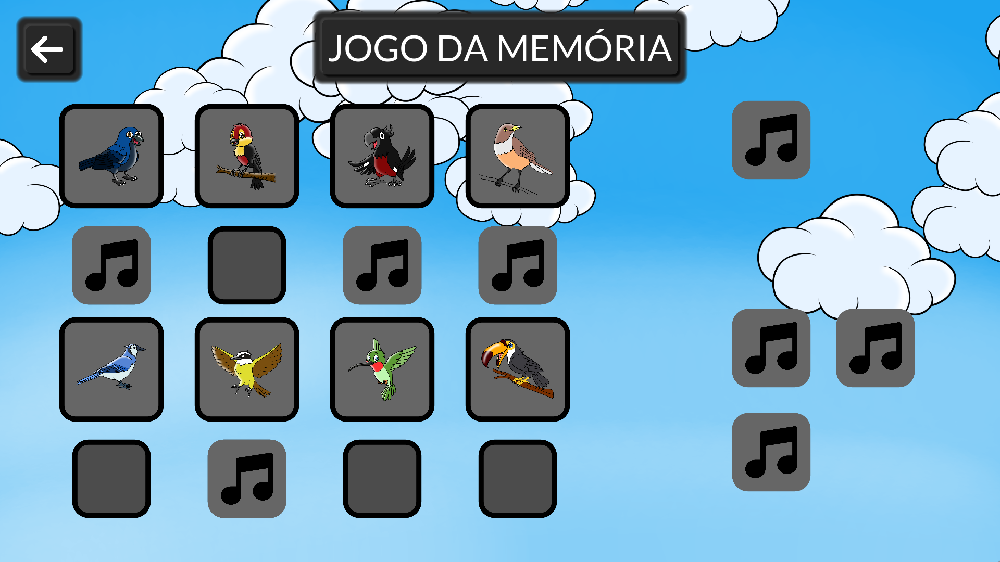

Alfabetiza
Um jogo educacional para alfabetização de crianças na língua portuguesa
Este aplicativo foi desenvolvido em parceria com a Faculdade de Educação da Universidade de São Paulo (FEUSP) e o Instituto de Matemática e Estatística da Universidade de São Paulo (IME-USP).
Ele tem como objetivo ser uma plataforma voltada para a alfabetização de crianças na língua portuguesa.
O jogo
O jogo consiste em uma coletânia de mini-jogos, cada um explorando um aspecto diferente da língua portuguesa. O aprendizado é desenvolvido por meio de interações baseadas em imagens, em textos e em áudios, para garantir um desenvolvimento abrangente das habilidades de comunicação da criança.
Além disso, caso algum educador queira utilizar o jogo em classe, é possível utilizá-lo com o sistema de login. Dessa forma, o desempenho dos alunos nos minijogos ficam salvos, e podem ser analisados pelo educador posteriormente, com o objetivo de identificar dificuldades em áreas específicas.

Versões do jogo sem login também podem ser utilizadas para testes, ocasiões que não permitam acesso à internet, ou quando o acompanhamento individual não é necessário.
O cenário
O jogo como um todo está situado em um cenário baseado em lendas tradicionais indígenais brasileiras. Os minijogos são divididos entre os quatro elementos: Terra, Água, Fogo e Ar.
Cada um dos elementos é baseado em alguma lenda indígena, que pode ser ouvida após completar o primeiro mini-jogo de cada elemento.
-
Elemento Terra: Lenda da Grande Árvore do Tamoromu
-
Elemento Água: Lenda do Boto Cor de Rosa
-
Elemento Fogo: Lenda do Primeiro Fogo

-
Elemento Ar: Lenda do Uirapuru
Os mini-jogos
Cada um dos quatro elementos se trata de uma coleção de sete mini-jogos, tendo cada minijogo diferentes níveis. Alguns dos mini-jogos aparecem em mais de um elemento, aumentando o nível de dificuldade à medida que progride no jogo.
Uma descrição completa de todos os mini-jogos presentes no aplicativo pode ser encontrada na seção sobre os minijogos deste livro. Aqui, apenas serão apresentadas algumas imagens de minijogos:
-
Mini-jogo Caça Letras, do elemento Terra
-
Mini-jogo Palavra Valise 1, do elemento Terra
-
Mini-jogo Rébus 2, do elemento Água
-
Mini-jogo Palavra Valise 1, do elemento Água
-
Mini-jogo Corrida do Fogo, do elemento Fogo
-
Mini-jogo Caça Palavras, do elemento Fogo
-
Mini-jogo Rébus 3, do elemento Fogo
-
Mini-jogo Jogo da Memória, do elemento Ar 
-
Mini-jogo Reconto, do elemento Ar
Além disso, todos os mini-jogos contam com tutoriais específicos, com mascotes explicando como funciona cada minijogo, tanto em formato de texto quanto em formato de voz.
Softwares utilizados
- O jogo foi desenvolvido inteiramente utilizando a Godot Game Engine
- Todas as artes foram confeccionadas utilizando o Krita
- O servidor foi desenvolvido utilizando PHP e MySQL
Agradecimentos especiais
- À Pró-Reitoria de Pesquisa da USP (PRP-USP) pelo financiamento do projeto;
- À Escola de Aplicação da Faculdade de Educação da USP (EAFEUSP)
- Ao Setor de Comunicação e Mídia da FEUSP